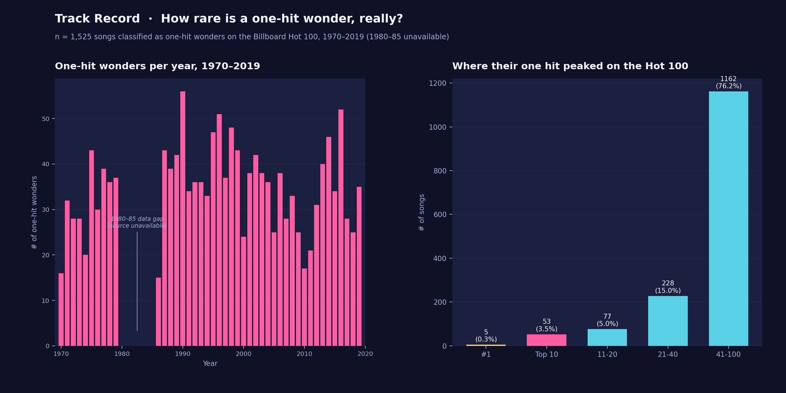

How Rare Is a One-Hit Wonder, Really?
Across five decades — 1970 through 2019 — 1,525 songs earned the "one-hit wonder" label, an average of about one every ten days. Only five of them ever reached #1, and most didn't even crack the top half of the Hot 100.

The dataset
Data comes from playback.fm's decade-by-decade one-hit-wonder pages (one page per decade, 1970s through 2010s), each listing artist, song, genre, and Billboard Hot 100 peak position for songs it classifies as one-hit wonders.
1,525 songs across 44 of the 50 years from 1970–2019 — every year except 1980–85, which the source page wouldn't load in full despite repeated attempts; that six-year gap is excluded from every count rather than estimated. playback.fm's own "hit" standard runs looser than the familiar Top 40 threshold, with peak positions in this dataset extending down to #100 — worth keeping in mind when reading the peak-position breakdown below. Full data and the analysis code are in the Track Record GitHub repo
The method
- Fetched each decade's playback.fm page and parsed the song / artist / peak-position / genre blocks into rows.
- Validated each decade's row count against the page's own stated total before trusting it (the 1990s matched exactly: 421 of 421, zero parsing failures).
- Combined all five decades into one dataset, then counted one-hit wonders per year and grouped their peak positions into five buckets: #1, Top 10, 11–20, 21–40, and 41–100.
What it showed
The crowning rate held steady. Every decade we have full data for averaged 31–42 new one-hit wonders a year — there's no long stretch where the phenomenon actually got rare. The 1990s ran hottest at 42.1 a year, peaking at 56 in 1990 alone; the 1970s and 2000s ran closer to 31–33 a year. Even the partial 1980s data (1986–89 only) sits in the same range, 34.8/yr.
| Peak position | Songs | Share |
|---|---|---|
| #1 | 5 | 0.3% |
| Top 10 (#2–10) | 53 | 3.5% |
| #11–20 | 77 | 5.0% |
| #21–40 | 228 | 15.0% |
| #41–100 | 1,162 | 76.2% |
Only five songs in the whole dataset ever reached #1: Carl Douglas's "Kung Fu Fighting" (1974), Billy Swan's "I Can Help" (1975), Los del Río's "Macarena" (1996), Gotye's "Somebody That I Used to Know" (2012), and MAGIC!'s "Rude" (2014). More than three in four peaked somewhere in the Hot 100's bottom half (#41–100) — this source's "hit" threshold runs much looser than the familiar Top 40 standard, so treat that 76% figure as "charted once, however briefly" rather than "had a real hit."
Genre split. Pop (679) and Rock (386) together account for about 70% of all one-hit wonders across the five decades, with R&B (339) a steady third and Country (121) a smaller but consistent presence.